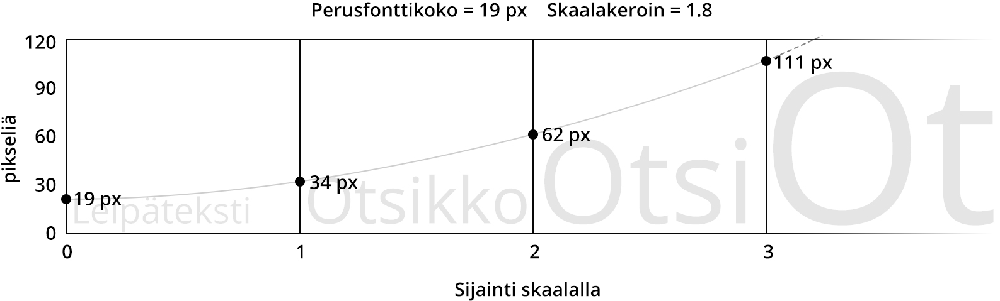

#Gridlover
## Vertikaalinen rytmi ja modulaarinen skaala web-typografiassa
Ville Vanninen
Opinnäytetyö
Kevät 2014
Kuvallinen viestintä
Oulun ammattikorkeakoulu
Työn ohjaaja: Tuukka Uusitalo
Kiitokset: Heli Huttunen, Veikko Mynttinen, Karoliina Niemelä, Kati Koivupalo, Tuomas Jomppanen
## Tiivistelmä
Tutkielmani käsittelee web-typografian järjestelmällistä rakentamista ja
tarkastelee siitä erityisesti pystysuuntaisten mittojen valitsemista ja laskemista.
Opinnäytetyön tuotannollinen osio oli toteuttamani typografiasovellus -
Gridlover. Sovellus tuottaa järjestelmällistä typografiaa, mutta sen toimintatapaa
ei ole dokumentoitu missään, joten näin opinnäytetyön oivana tilaisuutena
käydä läpi miten ja miksi Gridlover toimii.
Tutkielman tavoitteena on käydä läpi periaatteet joiden mukaan voi muodostaa
vertikaalisen rytmin ja modulaarisen skaalan, sekä näyttää käytännössä miten
ne lasketaan. Eli miten muodostaa kokonainen typografinen järjestelmä
mainituilla periaatteilla.
Käyn läpi typografien periaatteita, selainteknologiaa ja Gridloverin toimintaa
web-alan artikkelien, spesifikaatioiden, sekä omien web-design kokemusteni
pohjalta. Tutkielma on siis case-tutkimus Gridlover sovelluksesta.
Sovellan itse tutkielmaani Gridloverin jatkokehitykseen. Kaikkia selvitettyjä
periaatteita ei ole toteutettu sovelluksessa yhtä perusteellisesti kuin
tutkielmassa ilmaistaan. Tutkielmaa voi siis soveltaa web-typografian
syvempään ymmärtämiseen, tai jopa oman typografiasovelluksen
kehittämiseen.
Asiasanat: Typografia, web design, css, www-sivut
## Abstract
My thesis examines building a typographic system for use in web projects,
especially how to choose and calculate vertical measurements. The production
related to my thesis was a typographic web application I made - Gridlover. The
application produces systematic typography, but the way it works is not
documented anywhere, so I saw my thesis as an ample opporutunity to go
through how and why Gridlover works.
The purpose of this study is to go through the principles of forming vertical
rhythm and modular scale, and show how to calculate them in practice. That is,
how to form a complete typographic system with the aformentioned principles.
I will go through typographic principles, browser technology and the way
Gridlover works, by referencing articles, specifications and my own experiences
as a web designer. The study is a case study on Gridlover.
I will apply my findings in further developing Gridlover. Some of the principles in
the study are not implemented in the application as thoroughly as they are
explained. The study can be used for deeper understanding of web typography,
or even as base knowlegde for developing a new typographic application.
Keywords: Typography, web design, css, web-sites
## Sisällys
TODO: Generoi sisällys automaattisesti
## Johdanto
"Perfect typography is certainly the most elusive of all arts. Sculpture in stone alone
comes near it in obstinacy." (Thompson, 1969)
Jan Tschichold toteaa kirjassa Homage to the Book typografian olevan varmuudella
vaikein taiteen laji, vain kiven veistäminen on lähellä sen itsepintaisuutta. Juuri tästä
syystä täydellisen typografisen järjestelmän kehittäminen on kiehtonut minua niin
pitkään kuin olen tiennyt mitä typografinen järjestelmä tarkoittaa. Tiedän että
täydellisyyttä ei voi etenkään tällä taiteen alalla saavuttaa, mutta sitä kohti voi kuitenkin
pyrkiä.
Lähdin opinnäytetyönäni toteuttamaan web-sovellusta joka tuottaa kolmea muuttujaa
muuttamalla automaattista, säännönmukaista typografisesti järjestelmällistä CSS-
koodia, jota voi muokata ja soveltaa oman typografisen järjestelmänsä rakentamiseen
web-sivustoja suunnitellessa.
Gridlover tuottaa valmista CSS-koodia joka mahdollistaa pikselintarkan typografian
web-selaimissa käyttäen modulaarista skaalaa ja vertikaalista rytmiä. Näitä on
mahdollista laskea myös käsin, mutta se on erittäin työlästä ja jää helposti projekteissa
budjetin jalkoihin, kun on keskityttävä suuremmalla prioriteetilla oleviin projektin osa-
alueisiin. Gridloverin olemassaolon tarkoitus on mahdollistaa typografisen järjestelmän
suora muokkaus siten, että lopullinen koodi ja sen tuottama visuaalinen lopputulos on
nähtävissä välittömästi lähtöasetelmia muutettaessa.
Projekti lähti liikkeelle kun ystäväni Tuomas Jomppanen ehdotti ideaa vertikaalista
rytmiä ja modulaarista skaalaa visualisoivasta sovelluksesta. Hän teki idean pohjalta
ensimmäisen prototyypin. Innostuin heti työkalusta joka voisi nopeuttaa tarkan
typografian luomista uusiin web-projekteihin. Näin että työkalusta olisi hyötyä sekä
itselle työnteossa sekä muille typografiaa tuottaville web-designereille. Ensimmäisen
version matematiikka oli hyvin naiivia typografian suhteen: fonttikoot laskettiin vain
lineaarisella skaalalla, eli määrittämällä numero, joka lisätään kunkin otsikkotason
fonttikokoon kun mennään otsikkotasossa suuremmaksi. Kun aloin miettimään
matematiikkaa tarkemmin, oivalsin kuinka syvää ymmärrystä selainten toiminnasta ja
typografiasta sovelluksen tekeminen vaatisi. Pian ensimmäisen prototyypin valmistuttua
toteutin itse alusta asti uuden version Gridloverista ja otin kehityksen omalle
vastuulleni.
Gridlover on toteutettu yleisillä web-tekniikoilla: HTML, CSS ja Javascript.
Pääasiallinen kehitystyökalu on ollut tekstieditori koodin tuottamiseen ja Photoshop
käyttöliittymäsuunnitteluun. Tässä tutkielmassa käyn läpi tämän hetkisten web-selainten
ongelmia tarkan typografian tekemisessä ja sitä miten ja mitä ongelmia Gridlover
kehitettiin ratkaisemaan.
Tutkimusmenetelmänä on tapaustutkimus, jonka kohteena on tuottamani
typografiasovellus - Gridlover. Tutkimuksen teorialähteet ovat pääasiassa artikkeleita
pitkään web-alaan vaikuttaneilta henkilöiltä. Lyhyet blogiartikkelit voivat vaikuttaa
ensiajatuksena kevyeltä lähdemateriaalilta painettuihin kirjoihin verrattuna, mutta koska
tutkielma käsittelee nimenomaan web-typografiaa, on varsin aiheeseen sopivaa että
lähdemateriaalina on artikkeleita jotka kertovat web-typografiasta, sekä toteuttavat sitä
käytännössä ilmeellään ja tyylitiedostoillaan. Web-ala liikkuu eteenpäin niin nopeaan
tahtiin, että viisi vuotta sitten painettu kirja, jossa viitataan web-teknologioihin, voi
sisältää jo vanhentunutta tietoa. Etenkin koska viimeisen viiden vuoden sisällä web-
fontit ja web-typografia on ollut hyvin nopean kehityksen alla, verrattuna sitä
aikaisempaan kehitykseen jolloin tapahtui enemmän kehitystä muilla selainteknologian
osa-alueilla. Webissä julkaistuihin artikkeleihin myöskin ilmestyy korjauksia ja
laajennuksia sitä mukaa kun niitä koskevat faktat muuttuvat, joten senkin jälkeen kun
tämä työ on valmistunut, vaikka työssä itsessään olisi vanhentunutta tietoa, lähteistä voi
löytyä päivitettyä tietoa.
Tutkielman teoreettinen viitekehys pohjautuu typografiakirjallisuuteen, web-
standardeihin ja määrittelyihin sekä omaan pitkään kokemukseeni web-ammattilaisena.
Tarkastelen Gridloveria ja kirjallisuutta web-suunnittelun ja typografian perusteet
osaavan web-designerin näkökulmasta, jotta tutkielman ymmärtäminen ei vaatisi
etukäteen syvää ymmärrystä käsitellyistä asioista. Termistö ja tutkimus on enemmän
teknistä kuin estetiikkaan liittyvää.
Tärkeimpänä lähteenä käytän A List Apart, 24 ways julkaisujen artikkeleita web-
typografiasta, sekä W3C spesifikaatioita web-teknologioille. A List Apart on alan
arvostetuimpia, ellei arvostetuin julkaisu, johon alan tunnetuimmat henkilöt kirjoittavat
tekstejä jaksottaisesti. Se on myös yksi pitkäikäisimmistä web-designia koskevista
julkaisuista joita on olemassa. 24 ways on myös pitkäikäinen, joka joulukuussa 24
artikkelia, yhden päivässä, julkaiseva sivusto. W3C tuottaa spesifikaatioita, joiden
mukaan selaimet toteuttavat ominaisuuksia, sekä vastavuoroisesti muokkaavat
spesifikaatioita sen mukaan, mitä ominaisuuksia selaimet toteuttavat.
Tutkielman tarkoituksena on koota tietopaketti web-typografian teknisiin perusteisiin
vaikuttavista seikoista Gridloveria tutkien ja lopulta vastata kysymykseen “Kuinka
tuottaa pikselintarkka vertikaalinen rytmi ja skaala CSS:llä”. Pikselintarkka tarkoittaa
tässä yhteydessä sitä, että jokainen mitta jota tuotetussa typografisessa järjestelmässä
käytetään on tarkoituksella valittu ja matemaattisesti laskettu, eikä satunnaista vaihtelua
synny. Tällöin voidaan esimerkiksi luotettavasti luoda otsikkotaso, joka on kaksi kertaa
perus rivivälin korkuinen, vaikka lopputuloksena luvut tyylitiedostossa olisivat
satunnaiselta näyttäviä pitkiä desimaalilukuja. Tutkimusta voi soveltaa selaimissa
tapahtuvan typografisen suunnittelun ja sen monimuotoisuuden ymmärtämiseen, sekä
uusien typografisia säännöstöjä tuottavien sovellusten suunnittelun lähtökohtana.
Tutkielmaa lukiessa kannattaa avata Gridlover selaimeen osoitteessa [gridlover.net](http://gridlover.net). Kutakin kappaletta lukiessa voi käyttää sovellusta ja tarkastella sen
toimintaa lukemaansa liittyen. Koska kyseessä on interaktiivinen sovellus, sitä ei pysty
lisäämään tekstiliitteenä tulostettuun tutkielmaan, eikä sovellus toimi erillisenä
tiedostona ilman web-palvelinta, joten se on avattava web-osoitteesta tai ladattava
lähdekoodi omalle koneelle paikallisesti ajettavaksi.
## Typografia
Typografia on kirjasinten, sanojen ja tekstin sommittelua visuaalisesti. Typografian
tarkoitus on välittää kirjoitettua kommunikaatiota halutulla tavalla. Yleensä typografian
määritelmään kuuluu selkeyden ja luettavuuden tavoittelu. Usein typografiaa käsitellään
vain luettavuuden työkaluna. Typografia kuitenkin kattaa koko skaalan ihmisten välistä
kommunikaatiota ja sitä on löydettävissä kaikista visuaalisista medioista. Typografinen
kommunikaatio voi olla faktatiedon välittämisen lisäksi tunteellista, tai mitä tahansa
kielellistä kommunikaatiota joka halutaan esittää visuaalisesti. (Miller 99, 3, hakupäivä
4.4.2014)
“Vaikka typografia voi olla kutsumustyö, se on olennainen osa graafisen suunnittelijan
ammattia, monet typografian työkalut ovat saatavilla lähes kaikille. Tietäväinen ja
tunnollinen tarkkaavaisuus tarkoitukseen, muotoon ja yksityiskohtiin erottaa typografin
pelkästään kirjasinten käyttäjästä” (sama, 3)
Typografiaa voi siis toteuttaa taiteena, piittaamatta säännöistä, mutta tehokas
kommunikaatio perustuu historian ja sen kautta muodostuneiden sääntöjen syvään
tuntemukseen. Typografia ei kuitenkaan ole kuin kielioppia, typografian sääntöjä ei voi
pitää pilkuntarkkoina, vaan ne ovat enemmänkin ohjenuora, jonka pohjalta voi rakentaa
oman tapansa kommunikoida. Tapauskohtaisen typografisen järjestelmän rakentaminen
helpottaa typografian tuottamista.
Korostan typografian monimuotoisuutta ja historiaa selventääkseni miten tarkkaan
rajattu tarkoitus Gridloverilla on suhteessa typografiaan yleensä. Tarkoitukseni on
peilata Gridloverin toimintaa typografian pitkiin perinteisiin, jotta syntyisi ymmärrys
siitä, miksi ja miten Gridloverin, sekä yleisesti selainten, typografinen kontrolli
poikkeaa typografian perinteistä.
Toisin kuin monessa typografiaa sivumennen käsittelevässä opinnäytetyössä väitetään
(S. Harjukelo 2013: Visuaalisen ilmeen rakentaminen, 16; H. Maatta 2011: Visuaalisen
ilmeen ja virallisen Facebook-sivun suunnittelu ja toteutus, 12; M. Tarvainen 2011:
Käyttäjäystävällinen blogikäyttöliittymä), kirjasimen valinta ei mielestäni ole
yksittäinen tärkein valinta typografiaa suunnitellessa. Tekstin luettavuuteen vaikuttavat
monet seikat, eikä kirjasimen valintaa voi yksilöidä niistä tärkeimmäksi. Esimerkiksi jos
rivit ovat pitkiä ja rivin korkeus olematon, on teksti lukukelvotonta riippumatta
kirjasinvalinnasta. Kirjasimeen liittyvät valinnat ovat osa kokonaisen typografisen
järjestelmän luontia. Gridlover on työkalu vain skaalan ja rytmin löytämiseksi.
Tekstin luettavuus, rivin korkeus ja rivin pituus kulkevat käsi kädessä. Näiden
muuttujien määreisiin vaikuttavat myös fontin ominaisuudet. (Bringhurst 2012, 36)
Esimerkiksi jos fontti on leveä ja korkea, on optimaalinen rivin pituus suurempi kuin
kapealla fontilla ja optimaalinen rivikorkeus suurempi kuin matalalla fontilla. Koska
kirjasimen valinta usein mielletään tärkeimmäksi typografiseksi valinnaksi, sen
tekemiseen on olemassa jo runsaasti työkaluja. Gridlover keskittyy rivin korkeuden,
rivin pituuden ja fonttikokojen ja niiden välisten suhteiden valitsemiseen, eikä sisällä
työkaluja kirjasimen valintaan tai kirjasinten vertailuun.
Tekstin tasaus on typografisesti tärkeä valinta, mutta selaimissa sen kontrollointi on
vielä alkeellista. Selaimissa on valittavana vasen, oikea, keskitetty ja molempiin
reunoihin tasaus. Viimeksi mainitussa ei ole mitään yleisiä tapoja säätää tasauksen
käyttäytymistä. Gridlover ei ota kantaa tasaukseen, enkä käsittele sitä tutkielmassa.
Typografian osasia ei voi täysin erotella toisistaan, vaan typografisessa kokonaisuudessa
on monia palasia, jotka kaikki vaikuttavat toisiinsa. Tästä syystä on tärkeää, sekä
haastavaa, rakentaa yhtenäinen järjestelmä jota käyttää suunnittelun perustana. Vaikka
julkaisussa olisi valittu tietty fontti käytettäväksi läpi kaikkien sivujen, jos julkaisun
typografiassa käytetyt mitat muuttuvat paikasta toiseen, fontin sopivuus voi vaihdella.
Tärkeintä on että typografia tukee sisältöä, siten että sisältö ja sen esittävä typografia
ajavat samaa viestiä.
### 2.1 Design järjestelmä
Design järjestelmä tarkoittaa sisällön ulkoasua suunnitellessa valintoja, joilla luodaan
optimaalinen esitystapa sisällölle. Sen osasia voi olla kirjasin, perusyksikkö, väri,
muoto, ruudukot, taitto, fonttikoko ja rivin pituus. Näistä osasista luodaan järjestelmä,
jota sovelletaan suunnittelussa. Kaikilla osasilla on siis jokin suhde keskenään ja
järjestelmässä on jokin sisällöstä lähtöisin oleva perusyksikkö. Systemaattisella
lähestymistavalla saadaan aikaan yhtenäinen ilme kautta linjan koko tuotteelle tai
sivustolle jota ollaan tekemässä. (Kalbag 2012, hakupäivä 6.4.2014)
Olen itse pitkään käyttänyt dokumentin leipätekstin rivikorkeutta käytännöllisenä
mittana, johon perustaa muu typografia. Tähän viitataan usein nimellä vertikaalinen
rytmi. Valitsin Gridloverin säädettäviksi muuttujiksi fonttikoon, rivin korkeuden ja
skaalakertoimen. Muuttujat toimivat yhdessä ja vaikuttavat toisiinsa
esittelyjärjestyksessä.
Fonttikoko määrittää kirjainten koon. Fonttikoko on ensimmäinen asia joka
vaikuttaa tekstin luettavuuteen: Liian pienellä fonttikoolla kirjaimia ei pysty
erottelemaan toisistaan, liian suurella fonttikoolla kokonaiset sanat eivät edes
mahdu ruudulle.
Rivin korkeus on kerroin fonttikoolle. Rivin korkeudesta syntyy perusyksikkö
joka toistuu kaikkialla Gridloverin avulla tuotetuissa design järjestelmissä.
Skaala on kerroin, jonka mukaan otsikkotasojen fonttikoko määritetään.
Kullekin otsikkotasolla voi valita skaalalta sijainnin. Fonttikoko skaalalla lähtee
aluksi valitusta fonttikoosta ja suurenee eksponentiaalisesti valitun
skaalakertoimen mukaan.
Käytännössä webissä typografinen järjestelmä toteutetaan kirjoittamalla tyylitiedosto,
jossa näitä valintoja käytetään ja jonka mukaan sivuston ulkoasu määräytyy selaimessa.
Suunnitellessa täytyy ottaa huomioon, että sivustoa saatetaan katsella millaisella
ruudulla hyvänsä. Mahdolliset katseluympäristöt kannattaa jakaa kategorioihin ja
muuttaa tyylejä kullekin sopivimmaksi. Kullekin katseluympäristölle kannattaa valita
sopivin fonttikoko, rivin korkeus ja rivin pituus.
Gridlover ei itsessään ota kantaa katseluympäristöön, vaan toimii ympäristöstä
riippumatta. Tällöin kullekin ympäristölle sopivat tyylit voi toteuttaa ja esikatsella
tapauskohtaisesti, ottaa tyylit talteen ja koota itse tyylitiedostoonsa kunkin ympäristön
erilliset tyylit. Gridloverin tuottamaa tyylitiedostoa voi käyttää oman designinsa
lähtökohtana, tai suoraan sellaisenaan, jos haluaa vain visuaalisesti löytää
helppolukuisimmat arvot mainituille muuttujille.
### 2.2 Modulaarinen skaala
Englanniksi typografisesta sivun suunnittelusta puhuttaessa käytetään usein sanaa
compose - säveltää. Tämä liittyy siihen, miten typografisten mittojen suhteiden
määrityksiä voi verrata musiikin säveltämiseen. Bringhurst toteaa usein siteeratussa
kirjassaan Elements of Typographic Style: “A modular scale, like a musical scale, is a
prearranged set of harmonious proportions.” (Bringhurst 2012, 36)
Otsikkotasojen fonttikokojen perustana Gridloverissa on modulaarinen skaala.
Yksinkertaisimmillaan se tarkoittaa sitä, että fonttikoot lasketaan pienimmästä
suurimpaan, kertomalla edellinen fonttikoko skaalakertoimella ja näin saadaan seuraava
suurempi fonttikoko. Perus fonttikoosta pienemmäksi mennään jakamalla edellinen luku
suhdeluvulla. Skaalan voi rakentaa muillakin tavoin, sen tarkoitus on jäsentää numeroita
siten, että ne liittyvät toisiinsa jonkin merkityksellisen suhdeluvun kautta. Esimerkiksi
kultaisen leikkauksen suhdeluku 1.618, voi olla modulaarisen skaalan perustana.
(Brown 2011, hakupäivä 6.4.2014)
Käyttämällä historiallisesti ja kulttuurillisesti merkityksellisiä suhdelukuja skaalan
luomiseen ja perustamalla järjestelmän arvot tähän skaalaan, voi saavuttaa visuaalisen
harmonian, jollaista ei löydy satunnaisesti tai helpon laskettavuuden vuoksi valituilla
arvoilla toteutetusta järjestelmästä. (sama)
Ensimmäistä kertaa Brownin artikkelin luettuani lisäsin Gridloverin käyttöliittymään
skaalalle esivalinnat klassisten musiikillisten skaalojen mukaan. Rivin korkeus
määritellään Gridloverissa myös suhdelukuna fontin kokoon, mutta rivin korkeudelle en
lisännyt samoja esiasetuksia, koska rivin korkeus pyöristetään tyylitiedostoon niin
karkeasti, että tarkat esiasetukset menettäisivät merkityksensä. Jätin kuitenkin
mahdollisuuden syöttää numerokenttään itse niin tarkan arvon kuin haluaa.
### 2.3 Kirjasintyypit
Kirjasintyyppien mitoissa voi olla suuriakin eroja. Mitat vaikuttavat siihen, millainen
fonttikoko, rivikorkeus ja rivin pituus muodostaa luettavan ja silmää miellyttävän
kokonaisuuden. Tästä syystä fonttivalintaa ja muita mittoja ei voi pitää toisistaan
erillisinä päätöksinä, vaan ne on sovitettava toisiinsa. (Kuvio 1)
_KUVIO 1. Keskenään hyvin eri mittasuhteilla rakennetut kirjasintyypit, jotka on ladottu
identtisillä asetuksilla Gridloverissa. Vasemmalla Fjalla One, oikealla Cuprum._
Gridloverissa, ja selaimissa yleensä, ei pysty vaikuttamaan kirjasimen mittoihin
muutoin kuin fonttikokoa muuttamalla, eikä kirjasimien eri osien mittoja pysty
myöskään mittamaan. Rivivälit ja marginaalit on säädettävä kohdilleen visuaalisesti,
siihen on vaikeaa tehdä automatiikkaa.
### 2.4 Vertikaalinen rytmi
Vertikaalisen rytmin tarkoituksen voi ymmärtää musiikin kautta. Ajan ja tilan voi jakaa
määrättömän pieniin osiin. Musiikillinen harmonia perustuu ajan jakamiseen toisiinsa
suhteessa oleviin osiin. Musiikissa on siis rytmi, jonka avulla sitä seurataan. Rytmi voi
koostua eri mittaisista osista, tai poiketa välillä harmoniasta, mutta sen on aina
pohjauduttava johonkin. Samaa voi soveltaa tilan jakamisessa ja typografiassa.
Kirjaimet muodostavat vaakasuuntaisen rytmin täyttämällä valitun mittaisia rivejä.
Pystysuunnassa rytmin perustana on riviväli. (Bringhurst 2012, 36)
Sopivan rivivälin löytäminen on avainvalinta hyvään koko sivun läpi toimivaan rytmiin.
Kun sopiva rytmi on löytynyt, sitä ja sen kerrannaisia voi käyttää esimerkiksi otsikoissa,
sivuhuomautuksissa ja leipätekstissä siten että rytmi nappaa lukijan mukaansa ja ohjaa
häntä sivulla eteenpäin. (Rutter 2006, hakupäivä 7.4.2014)
Web-sivustoja tehdessä, vertikaalisessa rytmissä pysymiseen voi vaikuttaa monta
tekijää: kirjasinten korkeus (fonttikoko), rivikorkeus ja elementtien pystysuuntaiset
välistykset, sekä reunukset. Kaikki nämä on laskettava tarkkaan, jotta rytmi säilyisi läpi
sivun. (sama)
Historiallisesti printtisuunnittelussa pystysuuntaista rytmiä on muokattu lisäämällä tilaa
rivien väliin, tällöin puhutaan rivivälistä. Riviväli koostuu fontin koosta ja rivien väliin
lisättävästä tilasta. Selaimet poikkeavat perinteisestä typografiasta rivien ulottuvuuksien
määrityksessä. Webissä selaimet toimivat siten, että kirjaimet asetetaan pystysuunnassa
rivin keskelle. (Kuvio 2, oikea puoli) Rivien välissä ei ole normaalisti laisinkaan tyhjää
tilaa.
_KUVIO 2. Fontin pystysuuntainen sijoittelu. Vasemmalla kuvankaappaus
Photoshopista, oikealla kuvankaappaus Google Chromesta._
Kun riviväli määritellään lisäämällä tyhjää tilaa rivien väliin, pystytään helposti
pitämään rytmi sellaisena, että kirjasinten alapuolet osuvat rytmin määrittelemille
viivoille, jolloin rytmi on yleensä hyvin havaittavissa visuaalisesti. (Kuvio 2, vasen
puoli) Selaimissa rytmi ei välttämättä aina ole yhtä eksplisiittisesti esillä, vaikka tyyli
perustuisi printtiversiota vastaavaan vakiomittaiseen rytmiin.
Perinteisesti printissä taittaja määrittelee mitat käsin sen jälkeen kun on saanut sisältöä
taitettavaksi. Webissä esimerkiksi sosiaalisen sivuston, tai blogin tyylejä määritellessä,
ei etukäteen välttämättä tiedetä mitä sisältöä sivustolle tulee. Lukuisat eri päätelaitteet
myös vähentävät ennakoinnin mahdollisuutta. Käytännössä siis webissä esimerkiksi
otsikko voi rivittyä useammalle riville, eikä sen jälkeen jätettävää tilaa voida määrittää
käsin enää siinä vaiheessa, kun jokin lukulaite tuottaa otsikon ruudulle. Tällöin
rivimäärän ja mittojen on oltava sellaisia, että rytmi säilyy riippumatta rivityksistä.
(Kuvio 2, oikea puoli) Gridloverissa rytmin varma jatkuvuus toteutetaan pitämällä
kaikki pystysuuntaiset mitat perus rivivälin kerrannaisina.
## 3 Teknologia
_KUVIO 3. Gridloverin teknologian osa-alueiden hierarkia_
Kuvio 3 havainnollistaa Gridloverin teknologiahierarkian. Tässä kappaleessa käsittelen
kaikkia muita, paitsi Javascriptiä. Javascript on ohjelmointikieli jolla sovellukset
selaimissa toteutetaan. Javascript ei kuitenkaan liity suoraan typografiaan tai sen
laskentaan mitenkään, joten se on rajattu tutkielman ulkopuolelle. Laskenta-kappaleessa
käyn läpi typografiaan liittyvän matematiikan jota Gridloverin Javascript käyttää.
Gridloverin päänäkymä on esikatselu sille, miten käyttäjän valitsemien arvojen pohjalta
laskettu Gridloverin tuottama CSS-koodi vaikuttaa esikatselussa näytettävään web-
sivuun. Esikatselun sisältöä voi muokata kirjoittamalla Markdown-muotoista tekstiä
sisällön muokkauspaneeliin. Markdown muunnetaan HTML:ksi ja selain näyttää sen
esikatselunäkymässä. HTML-esikatselulle annetaan Gridloverin tuottama CSS-koodi ja
selain näyttää käyttäjän antaman sisällön hänen valintojensa pohjalta tehdyillä tyyleillä.
Tutkielmassa käsiteltävät selainteknologian pääalueet ovat HTML, CSS ja sen laskenta,
sekä Markdown-muodon muuntaminen HTML-koodiksi. Gridlover sisältää toki paljon
muutakin, jota vaaditaan kokonaisuuden toimimiseen. Esimerkiksi käyttäjän valintojen
ja sisällön tallentamisen välimuistiin, jotta ne eivät katoa kun sivu suljetaan ja ladataan
uudestaan. Sovelluslogiikkaan liittyvät puolet toteutuksesta eivät kuitenkaan suoraan
liity typografiaan, joten ne on rajattu tutkielman ulkopuolelle.
### 3.1 HTML
HTML (Hypertext Markup Language) on merkkauskieli jolla kuvataan web-
dokumenttien sisältöjä. HTML koostuu elementeistä, jotka merkataan dokumenttiin
tagipareilla. Esimerkiksi ylimmän tason otsikko merkataan seuraavanlaisesti:
`
Otsikko
`. (Web Platform Docs: Basic of HTML, hakupäivä 10.4.2014)
_KUVIO 4. Yksinkertainen HTML rakenne_
Gridloverin ja CSS-typografian kannalta tärkeintä on ymmärtää että HTML on
puurakenne, jossa on sisäkkäisiä elementtejä. Kuvio 4 havainnollistaa termit
juurielementti, lapsielementti ja isäntäelementti. Juurielementti on sisäkkäisessä
rakenteessa ylimmän tason elementti, juurielementtinä on aina `html`.
Esimerkkikoodissa `body` on `html`-elementin lapsi. `h1` ja `p` ovat `body`-elementin
lapsia. `body` taas on `h1` ja `p` -elementtien isäntäelementti ja `html` on `body`-elementin
isäntäelementti.
### 3.2 Markdown
Markdown on tapa merkata tekstiä siten, että se on helposti muunnettavissa HTML-
muotoon. Sen tarkoitus on tehdä mahdolliseksi kirjoittaa helppolukuista tekstiä
nopeasti, ilman suuria syntaksivaatimuksia, siten että teksti on kuitenkin muunnettavissa
suoraan selaimiin kelpaavaksi HTML-koodiksi nopeasti ja varmatoimisesti.
Markdownin syntaksin tärkein tavoite on olla mahdollisimman helppolukuista, mutta
mahdollistaa silti dokumentin rakenteen määrittely. (Gruber 2004, hakupäivä 12.6.2014)
_KUVIO 5. Markdown esimerkki_
Markdown-tekstiä (Kuvio 5) voi lähettää sellaisenaan vaikkapa sähköpostissa, sen
ollessa silti täysin kenen tahansa ymmärrettävissä. HTML-koodin tagimääreet taas
tekevät dokumentista jo huomattavasti vaikealukuisemman. Tämä on yksi syy sille,
miksi Gridloverin esikatselun muokkaus tapahtuu Markdownilla. Markdownin sekaan
voi myös kirjoittaa mitä tahansa HTML-koodia, joten Markdown mahdollistaa sekä
nopean perusdokumentin esikatselun, sekä minkä tahansa kokonaisen web-sivun
esikatselun Gridloverissa.
Nykyaikaisissa selaimissa on myös mahdollista editoida sivun sisältöä suoraan, siten
että selain muodostaa itse HTML-rakenteita käyttäjän muokkausten perusteella. Tästä
käytetään nimeä contenteditable. Selainten välillä on kuitenkin suuria eroja siinä, miten
ne käsittelevät contenteditablea, muokkausten päätteeksi lopputuloksena on yleensä
sekasotkuista HTML-koodia, jota kuitenkin joutuu siistimään käsin jälkeenpäin, jotta se
toimisi halutulla tavalla. Olen aikaisemmin kokeillut perus tekstinkäsittelyohjelmiston
toteuttamista contenteditablen avulla ja jouduin toteutuksessa jatkuvasti etsimään
ratkaisuja uusiin reunaehtoihin ja yhteensopivuusongelmiin eri selainten välillä. Tästä
syystä päätin jättää Gridloverista kokonaan pois mahdollisuuden sisällön
muokkaamiseen suoraan esikatselussa. Tein siis erillisen paneelin, jossa sisältö
määritetään Markdown -muodossa.
Gridloverin ulkopuolellakin Markdown liittyy siis typografiaan siten, että sillä on
helppo luoda dokumentteja, joiden sisältönä on yhden palstan levyinen teksti, jossa on
otsikoita, tekstikappaleita, listoja ja lainauksia. Näihin sovelletaan typografisia
perustyylejä. Markdown -muotoinen dokumentti ei siis sisällä sisällön ohessa tekstin
tasauksia, värejä tai fontteja, vaan siihen sovelletaan HTML:ksi muunnettuna CSS-
tiedostoa jossa on yleiset typografiset määreet mainituille elementeille.
### 3.3 CSS (Cascading Style Sheets)
“Cascading style sheets (CSS) on web-sisällön esitystavan kuvaamisen kieli.” (Web
Platform Docs: CSS, hakupäivä 10.4.2014)
Gridlover tuottaa käyttäjän valintojen pohjalta CSS-koodia, jota voi käyttää HTML-
sivujen typografisten tyylien pohjana. Gridloverin esikatselu tapahtuu selaimessa,
samassa ympäristössä jossa CSS-lopputulosta on tarkoitus soveltaa ja sen esikatselu
sisältää erillisen upotetun web-sivun, johon tyylipaneelissa oleva CSS-koodi on
linkitetty. Eli Gridlover näyttää mitä sen tuottama CSS saa aikaan selaimessa käyttäjän
määrittelemällä sisällöllä. Selainten eroavaisuuksia lopputuloksen suhteen voi
tarkastella avaamalla Gridloverin eri selaimilla.
CSS:llä siis määritellään käytännössä, miten selain esittää Typografia -kappaleessa
esitellyt konseptit ja miten voi toteuttaa typografisen design järjestelmän Gridloverin
antaman koodin pohjalta.
CSS koostuu säännöistä (rule). Jokaisella säännöllä on valitsin (selector), jonka jälkeen
tulee esittelylohko (declaration block), joka sisältää määreitä (declaration). Nämä
määreet kertovat miltä valitsimen osoittaman HTML -elementin tulee näyttää. CSS:llä
voidaan määrittää myös joiltain osin elementtien käyttäytymistä, esimerkiksi
vastaanottaako elementti klikkauksia, tai voiko sen tekstiä valita. (CSS 2.1
Specification: 4.1.8, hakupäivä 10.4.2014)
Kuvio 6 havainnollistaa koodiesimerkissä CSS:n pääasialliset osat. Näitä osia
muokkaamalla ja uudelleen järjestämällä pystyy jo luomaan omat tyylinsä jotka
perustuvat Gridloverin antamiin mittoihin.
_KUVIO 6. CSS-koodin pääasialliset osat_
Valitsimella kerrotaan mihin HTML-elementtiin tai -elementteihin sääntö tulee
kohdistaa. Valitsimet voivat olla monimutkaisia ja sisältää ehtoja sille, mihin niiden
tulee kohdistua. Elementeille voi antaa esimerkiksi uniikin tunnisteen yksilöimään tietty
elementti, tai yhteisen luokkanimen, jolla kohdistaa sääntö samalla kertaa moneen eri
nimiseen elementtiin. Gridlover tuottaa valmiit tyylisäännöt `body`, sekä `h1`, `h2`, `h3`, `h4`
ja `p` -elementeille ja käyttää vain yksinkertaisia elementin nimeen perustuvia valitsimia.
Valmiit tyylit sisältävät myös muutaman muun säännön (kts. Rivikorkeuteen vaikuttavat
elementit -kappale), jotka varmistavat että tehoste-elementit eivät vaikuta vertikaaliseen
rytmiin. Esimerkiksi tekstin korostamiseen tarkoitettu `b`-elementti lihavoi tekstiä
oletuksena ja vaikuttaa joillakin fonteilla rivikorkeuteen hieman, tällöin vertikaalinen
rytmi ei pysy tasaisena (yksittäinen rivi on liian korkea) ja sivun harmonia järkkyy.
Yhden palstan sivulla yhden tai kahden pikselin heitto pystysuuntaisessa rytmissä ei
välttämättä ole kovin näkyvä virhe, mutta jos sivulla on esimerkiksi aseteltu pääsisältö
ja sivupalkki samaan rytmiin, silloin sivupalkin ja pääsisällön rivit eivät välttämättä ole
enää pystysuunnassa samalla linjalla.
`body` on dokumentin näkyvän sisällön sisältävä elementti. Koska fonttimääreet
periytyvät `body`-elementin sisällä oleville elementeille, ne saavat oletusarvoisesti
saman fonttikoon ja rivikorkeuden kuin `body`, ellei niillä ole oletusarvoisesti, tai CSS-
määreiden seurauksena muita tyylejä. `h1`, `h2`, `h3` ja `h4` merkitsevät otsikkotasoja, aivan
kuten tavallisessa tekstinkäsittelyohjelmassa. `p` -elementti merkitsee tekstikappaletta,
sille annetaan tyylimääreet vain ylä- ja alamarginaaleille, periytyminen antaa sille samat
`body` -elementin fonttimääreet.
Periytyminen on olennainen osa CSS:ää, mutta selainten typografian perusteita ja
Gridloverin toimintaa voi ymmärtää ilman syvää perehtymistä periytyvyyssääntöihin.
Olennaista on muistaa että fonttikoko ja rivikorkeus periytyvät, mutta muut
pystysuuntaiset mitat eivät.
### 3.4 Mittayksiköt
“Pikselit ovat edelleen kanoninen mittayksikkö webissä, koska niiden käsittely on aina
samanlaista. Monet muut mitat muunnetaan suoraan pikseleiksi, myös JavaScript
ilmaisee mitat pikseleinä.” (Coyier 2013, hakupäivä 30.4.2014)
CSS:ssä on mahdollista käyttää monenlaisia mittayksiköitä. Yleisimmät käytetyt
yksiköt ovat järjestyksessä pikseli (merkitään px), em ja rem. Pikseli on selainten
käyttämä pituuden perusyksikkö, johon kaikki muut pituuden mitat lopulta lasketaan.
Tästä syystä se on yleisimmin käytetty yksikkö, sekä helpoin käyttää ja ymmärtää. Em
on fonttikoon kertoimena mittoja määrittävä yksikkö. Rem on juurielementin fonttikoon
kertoimena mittoja määrittävä yksikkö. Nämä yleisimmät yksiköt ovat ainoita, jotka
soveltuvat vertikaalisen rytmin laskentaan, muiden yksiköiden laskennallinen
pikseliarvo voi muuttua fontin, ruutukoon tai laitteen ominaisuuksien mukaan. (W3C
CSS Values and Units Module Level 3: Font-relative lengths, hakupäivä 30.4.2014)
Fyysiset mitat, kuten cm tai mm ovat käytettävissä, mutta ne eivät vastaa todellisen
maailman mittoja ruudulla, vaan ovat suhteellisia mittoja, joiden perustana on pikseli.
Pikselin koko voi vaihdella laitteesta riippuen, jolloin mm ja cm voivat olla eri mittaisia
eri laitteilla. Fyysiset mitat toimivat luotettavasti CSS:ssä vain printatussa materiaalissa.
(sama)
|
Yksikkö
|
Laskentasuhde
|
Fonttikoko
|
Rivikorkeus
|
Marginaalit
|
|
px
|
absoluuttinen
|
absoluuttinen
|
absoluuttinen
|
absoluuttinen
|
|
em
|
kerroin fonttikoolle
|
kerroin isäntäelementin fonttikoolle
|
kerroin elementin fonttikoolle
|
kerroin elementin fonttikoolle
|
|
rem
|
kerroin juurifonttikoolle
|
=
|
=
|
=
|
_TAULUKKO 1. Mittayksiköiden suhteellisuus_
Taulukossa 1 listaan mihin suhteutettuna selaimet laskevat kullekin Gridloverissa
käytössä olevalle yksikölle lopullisen koon pikseleinä. Kuten taulukosta voi päätellä,
em-yksiköt ovat luonteensa vuoksi vaikea mittayksikkö käyttää, koska mittoja
määritellään kertoimina ja kutakin mittaa määriteltäessä täytyy tietää, mille kyseinen
mitta on kertoimena. Tämä tuottaa erityisesti päänvaivaa kun halutaan laskea
tasapikseleihin osuvia mittoja.
Pikseli on CSS:ssä pienin mitta, jota voi käyttää, se lasketaan aina kokonaisluvuiksi,
siitä ei käytetä desimaalilukuja. Pikselin voi ajatella esimerkiksi millimetripaperilla
olevaksi yhdeksi ruuduksi.
Em on suhteellinen yksikkö. Em tarkoittaa kerrointa kussakin kontekstissa määritellylle
vertauskohdalle, vertauskohdaksi on määritelty fonttikoko. Em-yksikkö voi olla vaikea
hahmottaa, joten käyn siitä läpi muutamia esimerkkejä.
Jos selaimen oletusfonttikoko on 16 px ja `body`-elementille määritetään fonttikooksi 2
em, lopullinen fonttikoko `body`-elementillä on tällöin 32 px (16 px × 2 = 32 px). Jos
taas tämän äskeisen elementin lapseksi laitetaan otsikkoelementti, jolla on fonttikokona
2 em, sen fonttikooksi tulee tällöin 64 px (16 px × 2 × 2 = 64px). Näin fonttikoko
kertautuu aina isäntäelementin fonttikoon mukaan. Lukua, johon suhteessa em-yksiköitä
lasketaan kutsutaan kontekstiksi. Yleinen kaava em-yksiköiden laskennalle suhteessa
pikseleihin on:
`pikselimitta = em-mitta × konteksti`
Seuraavassa kuvassa (Kuvio 7) on havainnollistettuna em-laskenta sisäkkäisten
elementtien fonttikokoille ja rivikorkeuksille. Tummennetut, numeroidut kuplat
merkkaavat arvoja — syntyneitä konteksteja — joiden perusteella muita arvoja
lasketaan. Paikat joissa arvoja käytetään, on merkattu vastaavan numeroisilla, haaleilla
kuplilla. Vasemmalla ovat CSS-määreet em-yksiköissä. Näiden perässä on
laskutoimitus jonka perusteella lopullinen pikseliarvo syntyy. Oikealla on lopullinen
selaimen käyttämä pikseliarvo. Numeroarvoina on käytetty Gridloverissa käytettäviä
oletusarvoja.
_KUVIO 7. Esimerkki em-laskennasta pikseleiksi_
Rem (root em) on samalla tavoin suhteellinen yksikkö kuin em, mutta sen arvo on
sidottu aina juurielementin (`html`) fonttikokoon. Eli jos elementin rivikorkeudeksi
määritellään 2 rem, tuo 2 rem lasketaan aina suhteessa `html`-elementin fonttikokoon,
eikä kyseisen elementin fonttikokoon. Tämä tekee rem-yksiköistä yhtä helpon käsitellä
kuin pikselit, mutta silti suhteellisen. Jos sivuston kaikki mitat on määritelty rem-
yksiköissä, sivuston kaikkia mittoja voi halutessaan suurentaa ja pienentää pelkästään
muuttamalla `html`-elementin fonttikokoa.
Gridloverin toteuttamiseksi jouduin syventämään tuntemustani selainteknologioista
paljon, sekä lukemalla kielten määritelmiä ja tutkimalla selainten välisiä eroja
määritelmien toteuttamisessa. Kohdeyleisöön kuuluvan loppukäyttäjän ei kuitenkaan
tarvitse ymmärtää kuin hyvin perustasolla, miten HTML-dokumentteja luodaan ja miten
niihin liitetään tyylitietoja CSS:llä. Typografian perustuntemuskaan ei ole pakollista
pystyäkseen hyötymään Gridloverin käytöstä.
## 4 Käyttöliittymä
Käyttöliittymän tärkein periaate on suora manipulaatio. Suora manipulaatio tarkoittaa
sitä että asia joka muuttuu, sekä käyttöliittymä joka sitä muuttaa, ovat sama asia. Suoran
manipulaation toteutumista vastaan Gridloverissa voisi väittää siten, että
esikatselualueen sisältöä ei voi muokata suoraan, mutta Gridloverin tapauksessa
manipuloitava asia on typografiset lähtöarvot, sekä CSS-koodi joka vaikuttaa
esikatseluun. Gridloverissa siis tarkastellaan reaaliajassa miten muokatut arvot
muuttavat haluttua lopputulosta.
_KUVIO 8. Gridloverin käyttöliittymän osat numeroituna_
### Fonttikoko (Kuvio 8, merkattu numerolla 1)
Tällä valitsimella valitaan alustava fonttikoko. Numero on aina pikseleinä, vaikka
numeron perässä ei näytetä yksiköitä. Tähän on muutama syy:
- Kokonaislukuja kymmenestä viiteenkymmeneen on helpompi hahmottaa kuin
pitkiä desimaalilukuja välillä yhdestä kolmeen.
- Selaimet käsittelevät sisäisesti kaikkia arvoja pikseleinä. Arvoja voi määritellä
muissa yksiköissä, mutta selain muuntaa ne aina pikseleiksi, ennen kuin laskee
elementtien koot ja piirtää sivun.
- Pikseli on helpoiten ymmärrettävä ja eniten käytetty CSS-yksikkö, siksi se on
myös Gridloverin oletusarvo CSS-koodissa, jolloin on myös perusteltua pitää
fonttikoon säätö pikseliarvona.
- Eri arvoilla alustettuja Gridlover-tuotoksia voisi vertailla muuntamatta yksiköitä
keskenään yhtenäisiksi.
### Rivikorkeus (Kuvio 8, merkattu numerolla 2)
Tällä valitsimella valitaan rivin korkeus. Rivikorkeus on kerroin fonttikoolle. Rivin
korkeus määritellään fonttikoon kertoimena, jotta sitä ei tarvitsisi säätää uudestaan joka
kerta kun fonttikokoa muuttaa. Jos rivikorkeus määriteltäisiin CSS-yksiköinä, sen
käyttäytyminen muuttuisi yksiköiden mukaan. Aikaisemmissa Gridloverin versioissa
sekä fonttikoko että rivikorkeus määriteltiin sisäisesti pikseleinä ja kertoimena, mutta
näytettiin käyttäjälle hänen valitsemissaan yksiköissä, mutta tämä oli harhaanjohtavaa,
sillä käyttäjän valitsemat arvot muuttuivat yksiköiden muuttuessa.
### Skaala (Kuvio 8, merkattu numerolla 3)
Skaala on kerroin, jonka mukaan otsikkotasojen fonttikoko määritetään. Tämän voisi
näyttä myös suhdelukuna (1:1.168), mutta pelkkä desimaaliluku on helpompi
hahmottaa, joten “1:” sen edessä olisi vain turhaa visuaalista melua.
Fonttikoon, rivikorkeuden ja skaalan arvoja voi säätää nopeasti raahaamalla
liukuvalitsinta, jolloin on helppo tarkastella visuaalisesti säädön aikana miten arvon
muutos vaikuttaa lopputulokseen. Arvot voi myös syöttää näppäimistöllä suoraan
numeroina, klikkaamalla numeroarvoa.
### Käyttöliittymän näkymät (Kuvio 8, merkattu numerolla 4)
Grid-nappi näyttää ja piilottaa esikatselualueelta (Kuvio 8: numero 7)
visuaalisen esityksen vertikaalisesta rytmistä ja elementtien marginaaleista.
Rytmi näytetään osittain läpinäkyvinä sinisinä vaakaviivoina. Marginaalit
väritettyinä, osittain läpinäkyvinä sinisinä alueina.
Content-nappi näyttää ja piilottaa sisältöpaneelin esikatselun päällä.
Sisältöpaneeli on tekstikenttä, johon kirjoitetaan haluttu sisältö Markdown-
muodossa. Esikatselu päivittyy automaattisesti aina kun sisältöpaneeliin
kirjoittaa. Sisältöpaneelin saa pois näkyvistä klikkaamalla uudestaan content-
nappia.
Styles-nappi näyttää ja piilottaa tyylipaneelin.
### Tyylipaneelin valinnat (Kuvio 8, merkattu numerolla 5)
Tyylipaneelin yläosa sisältää valinnat CSS-koodin käyttämille yksiköille ja valinnan
vaihtaa koodin formaattia CSS:n kaltaisiin kieliin, jotka mahdollistavat muuttujien
käytön.
### CSS-koodi (Kuvio 8, merkattu numerolla 6)
CSS-koodi on valittavissa olevaa tekstiä, vaikka sisältääkin mahdollisuuden muokata
sinisellä korostettuja arvoja. Sinisten numeroiden arvoja voi muuttaa klikkaamalla ja
raahaamalla vaakasuunnassa tai klikkaamalla numeroa ja painamalla ylös- ja alaspäin
nuolinäppäimiä. Muokattavia arvoja ovat palstan leveys (`max-width`), kunkin
otsikkotason fonttikoko ja ylä- ja alamarginaalit, sekä tekstikappaleiden ylä- ja
alamarginaalit.
Otsikoiden koot määritellään kokonaislukuina skaalan askelina, sijainti skaalalla on
lasketun arvon perässä suluissa. Marginaalien arvojen perässä suluissa olevat
kokonaisluvut ovat kerroin kunkin elementin rivikorkeudelle.
### Esikatselu (Kuvio 8, merkattu numerolla 7)
Esikatselu sisältää oletusarvoisesti satunnaista täytetekstiä, jossa on merkattuna neljä
otsikkotasoa, leipätekstiä ja lista. Esikatselu näyttää miten käyttäjän valitsemien arvojen
tuottama CSS vaikuttaa oletussisältöön tai käyttäjän määrittelemään sisältöön.
## 5 Laskenta
Jotta vertikaalinen rytmi osuisi kokonaisiin pikseleihin, kaikki laskenta on tehtävä
pikseleihin kohdistuvia pyöristyksiä silmällä pitäen. Laskentatavat ovat sovellettavissa
mediasta riippumatta, mutta em-laskentaan liittyvä pikselintarkkuuden haku on CSS:ään
liittyvä erikoisuus. Toivon mukaan pikselintarkkuuteen liittyvän koodin voi poistaa
Gridloverista, kun selaimet alkavat paremmin tukea sivun taiton laskemista
desimaalitarkkuuksilla kokonaisten pikselien sijaan.
Kuten Typografinen design järjestelmä -kappaleessa käydään läpi, aluksi on valittava
lähtökohdaksi fonttikoko, rivikorkeus ja skaalakerroin. Aluksi perusfonttikoko
määritellään pikseleinä, perusrivikorkeus desimaalilukuna, samoin skaalakerroin
desimaalilukuna. Tämän jälkeen päätetään laskettavien elementtien fonttikoon sijainti
skaalalla kokonaislukuna, sekä ylä- ja alamarginaalit kokonaislukuina rytmin
kerrannaisina. Rytmin yksikkö on `body`-elementin rivikorkeus. Näiden lukujen
pohjalta lasketaan fonttikoko, rivikorkeus ja ylä- ja alamarginaalit kullekin halutulle
elementille, Gridloverin tapauksessa `body`, `h1`, `h2`, `h3`, `h4` ja `p`-elementeille.
Sopivat luvut eri elementeille voi valita monesta eri lähtökohdasta. Esimerkiksi
käyttämällä lähtökohtana historiallisesti merkityksellisiä mittoja, jostakin sisältöön
liittyvästä lähtöisin olevia mittoja, tai tarkastelemalla lopputulosta visuaalisesti ja
säätämällä arvoja interaktiivisesti kunnes ne näyttävät sopivilta. Käytän esimerkeissä
Gridloverissa olevia oletusarvoja.
### 5.1 Skaala

_KUVIO 9. Esimerkkiskaala_
Kuviossa 9 on havainnollistettuna miten sijainti skaalalla, lasketut fonttikoot ja
otsikoiden visuaalinen koko liittyvät toisiinsa, kun käytetään Gridloverin oletusarvoja.
Tässä kappaleessa käyn läpi miten arvot skaalalla lasketaan.
Gridloverissa elementtien fonttikoot määritellään ilmaisemalla kokonaislukuna millä
kohden skaalaa fonttikoko sijaitsee. Mikään ei estä käyttämästä desimaalilukua
ilmaisemaan sijaintia skaalalla, mutta yksinkertaisuuden vuoksi Gridloverissa käytetään
vain kokonaislukuja. Hienojakoisemman kontrollin elementtien fonttikokojen
määrittämiseen saa pienentämällä skaalakerrointa ja samalla tuplaamalla skaalasijainnin
luvut.
Skaalattu fonttikoko saadaan, kun fonttikoko, jonka pohjalta skaalaa lähdetään
laskemaan, kerrotaan skaalakertoimella skaalasijainnin mukaan:
`skaalattu koko = perusfonttikoko × skaalakerroin ^ skaalasijainti`
Gridloverin oletus perusfonttikoolla (19 px), suurimman otsikon (`h1`-elementti) koko
lasketaan näin:
`110.808 px = 19 px × 1.8 ^ 3`
Kun luku pyöristetään kokonaisiksi pikseleiksi, saadaan lopullinen koko, 111 px. Luvun
voi halutessaan jättää pyöristämättömäksi, sillä selaimet pyöristävät desimaaleina
määritetyt pikselimääreet automaattisesti kokonaisluvuiksi. Muilla kuin piksliyksiköillä
laskettaessa, luku jätetään mahdollisimman tarkaksi desimaaliluvuksi, josta selain
laskee itse pikseliarvon käytettäväksi.
Laskutoimitus toimii identtisesti rem-yksiköillä, mutta em-yksiköillä on otettava
huomioon konteksti, jossa lopullinen luku tulee esiintymään. (kts. Mittayksiköt -
kappale) Kontekstin voi ottaa huomioon monella tavalla, mm. määrittämällä `html`-elementin
fonttikoon valitsemallaan pikseliarvolla ja aloittamalla skaalan arvosta 1 em.
Gridloverin on kuitenkin tarkoitus tuottaa mahdollisimman vähän CSS-koodia. Koodin
on tarkoitus olla mahdollisimman yleispätevää, joten se ei määritä `html`-elementille
fonttikokoa. Konteksti lasketaan kaavaan mukaan seuraavalla tavalla:
`skaalattu koko = perusfonttikoko × skaalakerroin ^ skaalasijainti × 1 / konteksti`
Koska otsikkoelementit sijaitsevat aina `body`-elementin lapsielementteinä, niillä
kontekstina on `body`-elementille annettu fonttikoko. Gridloverissa tämä on 19 px.
Aikaisemmin pikseleinä laskettu suurimman otsikon (`h1`-elementti) koko lasketaan em
yksiköillä näin:
`5.832 em = 1.1875 em × 1.8 ^ 3 × 1 / 1.1875`
Laskelmat toistetaan jokaiselle otsikkokoolle. Näin saadaan `h2`-elementille
skaalasijainnilla 2 fonttikooksi 64 px, `h3`-elementille skaalasijainnilla 1 fonttikooksi 34
px ja `h4`-elementille skaalasijainnilla 0 fonttikooksi 19 px. Skaalaa voi myös laskea
negatiiviseen suuntaan antamalla skaalasijainniksi negatiivinen numero.
### 5.2 Rytmi
Gridloverissa rytmi on aina perusrivikorkeus pikseleiksi pyöristettynä. Se lasketaan siis
suoraan kertomalla perusfonttikoko perusrivikorkeudella ja pyöristämällä tulos
kokonaisiksi pikseleiksi.
`rytmin yksikkö ≈ perusfonttikoko × perusrivikorkeus`
Gridloverin oletus perusrivikorkeudella (1.4), leipätekstin (`body`-elementti) koko
lasketaan näin:
`26.6 px = 19 px × 1.4`
`27 px ≈ 26.6 px`
Kun elementin fonttikoko ylittää rivikorkeuden, sovitetaan kyseisen elementin
rivikorkeus olemaan pienin mahdollinen kerrannainen perusrivikorkeudesta, johon
elementin fonttikoko mahtuu. Toisin sanottuna: lasketaan montako riviä kyseinen
fonttikoko tarvitsee, jotta rytmi pysyy ennallaan, eikä suurikokoinen teksti mene
pystysuunnassa päällekkäin. Laskenta tapahtuu seuraavalla kaavalla. (Huomioi
jakolaskun ympärillä oleva ceiling funktio.)
`elementin rivikorkeus = rytmin yksikkö × ⌈skaalattu fonttikoko / rytmin yksikkö⌉`
Gridloverin oletusarvoilla (27 px rytmi), `h1`-elementin (111 px fonttikoko) rivikorkeus
lasketaan näin:
`135 px = 27 px × ⌈111 px / 27 px⌉`
Absoluuttisilla yksiköillä (px ja rem) rivin laskeminen on hyvin suoraviivaista, mutta
em-yksiköillä on jälleen otettava huomioon konteksti. Lasketaan ensin rytmin yksikkö:
`1.4 = 1.1875 em × 1.4 × 1 / 1.1875`
Koska em-yksiköt ovat fonttikoon kerrannaisia, ylempänä määritetty rytmin yksikön
laskukaava tuottaa perusrivikorkeuden arvon. Tämä arvo täytyy kuitenkin pyöristää
kokonaisiksi pikseleiksi, jotta rytmi pysyy kohdallaan. Jos tästä arvosta laskee suoraan,
montako riviä otsikkotason fonttikoot tarvitsevat, voi tulokseksi tulla pikseleiksi
muunnettuna jotain muuta kuin aikaisemmin lasketun 27 px arvon kerrannaisia.
Tarvitun arvon voimme selvittää seuraavalla kaavalla.
`kohdemitta = fonttikoko × rytmin yksikkö × 1 / konteksti`
Tiedämme että selaimen oletusfonttikoko on 16 px ja `body`-elementtimme fonttikoko
on 1.1875 em, tai 19 px, kuten perusfonttikooksi on määritelty. Tiedämme myös
aikaisemmasta pikselilaskennasta, että halutulla rivikorkeudella 1.4, rivikorkeudeksi
tulee pikseleinä 26.6 px, joka on pyöristettynä 27 px. Tällä tiedolla voimme laskea
halutusta lopputuloksesta rytmin yksikön em-mittana. Tässä tapauksessa:
```
27 px = 19 px × rytmin yksikkö × 1 / 1.1875 em
rytmin yksikkö = 1 / (19 px / 27 px × 1 / 1.1875 em)
rytmin yksikkö = 1.6875 em
```
Koska rivikorkeus em-yksiköissä lasketaan aina kyseisen elementin fonttikoon
mukaisessa kontekstissa, eikä siis samassa kontekstissa kuin fonttikoko itsessään, on
tehtävä vielä yksi kontekstilaskenta jotta mitta olisi suhteessa elementin fonttikokoon:
`1.4210526316 em = 1.6875 em × 1 / 1.1875`
Saatua arvoa on nyt turvallista kertoa kokonaisluvuilla siten, että lopputulos on aina
kokonaisia pikseleitä, jolloin rytmi säilyy tarkkana kautta sivun.
Tämän laskutoimituksen sisäistäminen ja toteuttaminen oli vaikein osuus Gridloverin
toteuttamisessa. Sitä ei ole käytännöllistä laskea käsin, varsinkaan kun se pitää toteuttaa
uudestaan joka elementille ja otsikoita laskiessa on muistettava ottaa mukaan kunkin
otsikkotason fonttikoon konteksti. Tästä syystä en listaa erillisiä esimerkkejä
otsikkotasoille.
Em-yksiköillä laskiessa kannattaa siis aina laskea luvut ensin pikseleiksi ja
pikseliarvojen perusteella laskea halutut em-arvot lopullisiksi käytettäviksi arvoiksi.
### 5.3 Marginaalit
Ylä- ja alamarginaalit lasketaan kertomalla rytmin yksikkö valitulla kokonaisluvulla.
Pikseleinä laskettaessa tämä on jälleen hyvin suoraviivaista. Kun halutaan elementille
kahden rytmin yksikön mittainen marginaali, kerrotaan rytmin yksikkö kahdella.
Esimerkiksi `h1`-elementin ylämarginaali:
`27 px × 2 = 54 px`
Koska aikaisemmassa rytmin yksikön laskennassa otettiin jo huomioon konteksti, myös
em-yksiköillä marginaalit voidaan kertoa suoraan halutulla rytmin kerrannaisella.
Esimerkiksi `p`-elementin alamarginaali:
`1.4210526316 em × 2 = 2.8421052632 em`
## 6 Ongelmia ja ratkaisuja
### 6.1 Luhistuvat marginaalit
_KUVIO 10. Luhistuvat marginaalit otsikon ja tekstikappaleen välillä_
CSS-taiton erikoisuus marginaalien suhteen on, että ne luhistuvat. Tämä tarkoittaa sitä
että kahden pystysuunnassa peräkkäisen elementin väliin jäävä tila on vain näistä
elementeistä suuremman marginaalin omaavan mitan suuruinen. Kuviossa 10 on
esimerkkinä otsikko jolla on alamarginaalia kolme rytmin yksikköä ja sen perässä
olevalla tekstikappaleella ylämarginaalia yksi rytmin yksikkö. Näiden väliin jäävä tila ei
ole yhteensä neljä yksikköä, vaan otsikolle määritelty kolme yksikköä. Marginaalit on
Gridloverissa visuaalisesti näytetty osittain läpinäkyvällä sinisellä värillä, jolloin
marginaalien luhistuminen näkyy tummennetulla marginaalivärillä.
Luhistuvat marginaalit ovat CSS:n ominaisuus, eivätkä siis määritelmällisesti kielen
ongelma. Ne muuttuvat ongelmallisiksi käytännössä, kun tehdään monimutkaista
taittoa, sillä luhistumiselle ja luhistumattomuudelle on monia reunaehtoja. (W3C
CSS2.1 Specification: Collapsing margins 2011, hakupäivä 4.5.2014) Marginaalien
luhistuminen on kirjamaisessa taittamisessa hyödyllinen työkalu. Luhistuvilla
marginaaleilla elementeille siis määritellään keskenäisiä välejä ajatuksella: “Tälle
elementille tarvitaan vähintään tämän verran tilaa ylä- ja alapuolelle”
Yleisesti web-taittoa tehdessä, esimerkiksi sovellusten käyttöliittymiä suunnitellessa
mittojen määrittäminen on yleensä hyvin eksplisiittistä tai suhdelukupohjaista. Tällöin
luhistuvat marginaalit ja niiden poikkeustapaukset aiheuttavat yleensä lähinnä
päänvaivaa.
### 6.2 Jalkalinjan tasaus rytmiin
_KUVIO 11. Oikealla esikatselu oletusarvoilla, keskellä esikatselu jalkalinjan
tasauksella, oikealla, sinisellä merkattuna, CSS-lisäykset joilla kohdistus toteutetaan._
Kuten Typografia -kappaleessa kerrotaan, selaimet tasaavat kirjaimet rivivälin keskelle.
Jos rytmin näkyvyyttä sivulla halutaan korostaa, kirjainten jalkalinjat voi tasata rytmin
viivoille. (Kuvio 11, keskellä) Selainten normaalin rivien käsittelyn vuoksi tämä ei ole
helppoa, vaan vaatii jokaiselle määritellylle fonttikoolle oman kohdistuksen rytmin
viivoille. Jalkalinjan tasaus ei välttämättä osu kohdilleen vaikka se olisi määritelty,
koska määritelty kirjasintyyppi voi verkkovirheen takia jäädä latautumatta, jolloin
kirjasimen pystysuuntaiset mitat voivat olla erilaiset, kuin ne joiden mukaan rytmin
mitat on määritelty. Jalkalinjan tasaus visuaalisesti, käytetyn fontin mukaan, on CSS:llä
mahdollista muutamin keinoin. Käyn läpi vain yksinkertaisimman tavan, jonka
toteutustapa näkyy kuviossa 11 oikealla.
CSS-määre `position: relative;` mahdollistaa elementin liikuttamisen siten, että
sijainnin muutos ei vaikuta muihin elementteihin. Eli muut osat dokumentista
käyttäytyvät kuin elementin paikkaa ei olisi liikutettu laisinkaan. Määreellä `top:
pituus;` kerrotaan elementille kuinka paljon sijaintia tulee muuttaa, suhteessa
elementin ylälaitaan. (W3C CSS 2.1 Specification: Relative positioning 2011,
hakupäivä 5.5.2014)
Koska fonttien mittoja ei pysty lukemaan ohjelmallisesti selaimissa, Gridlover ei vielä
mahdollista minkäänlaista automaattista jalkalinjan tasausta, vaan tasaus on toteutettava
itse, kun tyylit on viety Gridloverista omaan projektiin.
### 6.3 Rivikorkeuteen vaikuttavat elementit
_KUVIO 12. Rivikorkeuteen vaikuttavat elementit. Vasemmalla normaali rytmi, keskellä `small`-elementti, oikealla `sub` ja `sup`-elementit._
Joillakin elementeillä on selaimen oletustyyleillä vaikutus rivin korkeuteen. Näistä
yleisimmät ovat `small`, `sup` ja `sub`-elementit. (Kuvio 12) Myös `code` ja `b`-
elementit vaikuttavat joillakin fonteilla rivikorkeuteen. Yleisesti kaikki tyylit, jotka
muuttavat fonttikokoa tai elementin pystysuuntaista kohdistusta rivillä, voivat vaikuttaa
rivikorkeuteen. Gridloverin tyylejä käytettäessä, on lopullista taittoa tehdessä itse
testattava, säilyykö rytmi kohdallaan kautta sivun.
`small`-elementti saa selaimissa oletuksena tyyliksi pienemmän fonttikoon, mutta
toisin kuin voisi olettaa, suurentaa rivin korkeutta, jolla sijaitsee. (Kuvio 12, keskellä)
Elementin vaikutus rivikorkeuteen poistetaan Gridloverin CSS-koodissa määreellä `line-height: 0;`
`sup` ja `sub` -elementit merkkaavat ylä- ja alaindeksiä. Ne saavat oletusarvoisesti
selaimissa määreet `vertical-align: superscript;` tai `vertical-align: subscript;`
Nämä määreet määrittävät miten elementti sijoitetaan rivillä suhteessa
muuhun tekstiin. Selaimet laajentavat riviä näissä tapauksissa, varmistaakseen että ylä-
ja alaindeksissä olevat tekstit eivät menisi päällekkäin muiden rivien tekstien kanssa
missään tapauksissa. (Kuvio 12, oikealla) Tämä rytmin rikkova tyyli korjataan
Gridloverissa määreellä `vertical-align: baseline;` jolloin elementit tasataan
pystysuunnassa rivin jalkalinjaan. Haluttu ylä- ja alaindeksiefekti elementeille annetaan
edellisessä kappaleessa läpi käydyllä tekniikalla jalkalinjan tasaukseen. Sopivat `top`-määreen
arvot vaihtelevat fonteittain, mutta yleisesti hyväksytyt arvot ovat `sup`-elementille
`top: -0.5em;` ja `sub`-elementille `bottom: -0.25em;` (HTML5 Boilerplate 2014, hakupäivä 4.5.2014)
Elementit tarvitsevat myös `line-height: 0;` määreen, koska niiden fonttikoko on normaalia pienempi
ja ne saattavat aiheuttaa saman vaikutuksen rytmiin kuin `small`-elementti.
`code`, `b`, sekä `strong` -elementit voivat myös joissain tapauksissa vaikuttaa
rivikorkeuteen, joten niille annetaan määre line-height: 0;
Mikä tahansa elementti, jolla on reunus, vaikuttaa rivikorkeuteen. Reunusta ei piirretä
elementin päälle taiton laskemisen jälkeen, vaan reunuksen korkeus lisätään elementin
korkeuteen. Elementti, jolla on reunus peruuttaa sen lapsielementtinä olevan elementin
ylämarginaalin luhistumisen, joten reunuksia käyttäessä täytyy olla erityisen tarkkana,
jos haluaa säilyttää rytmin kohdallaan kautta sivun.
Gridloverissa reunukset otetaan huomioon vain `hr`-elementillä, koska reunusten
käsittelyyn ei ole mahdollista tehdä yleistä sääntöä. `hr`-elementti tarkoittaa
vaakaviivaa, sen oletustyyli on paksu reunus ja 1 em:n ylä- ja alamarginaalit.
Elementille annetaan yhden pikselin reunus joka suuntaan määreellä `border: 1px solid;`,
sekä yhden pikselin negatiivinen marginaali ylä- sekä alapuolelle määreellä
`margin: -1px auto;` Tällöin elementin korkeus on taiton kannalta nolla, vaikka
visuaalisesti se tuottaa sivulle kahden pikselin vaakasuuntaisen viivan. `hr`-elementin
reunustyyli on koodissa esimerkkinä, jotta reunusten ja välistysten suhde ei unohtuisi
Gridloverin tuottamaa CSS-koodia käyttäessä.
Pitkät numerot, kuten Laskenta -kappaleessa saatu 1.4210526316 em arvo rytmin
yksiköksi, ovat epäkäytännöllisiä tyylejä käsin tehdessä. Pitkiä desimaaleja on vaikea
muistaa ja hitaampi käsitellä tekstieditorissa. Yleensä selaimet käsittelevät arvoja
pikseleiden pyöristyksen suhteen vain muutaman desimaalin tarkkuudella, mutta
selaimissa on tämän suhteen eroja, joten arvot kannattaa pitää aina mahdollisimman
tarkkoina.
Vuoden 2012 lopulla Gridloverissa oli käytössä vain neljä desimaalia em-yksiköillä ja
rytmi kohdistui pikselilleen kaikilla tuetuilla selaimilla. Vuodenvaihteen jälkeen Google
Chrome päivitti em-laskentaa siten, että rytmin viivat eivät enää kohdistuneet
pikselilleen tällä tarkkuudella. Tästä syystä CSS-paneelissa on nyt em-yksiköissä olevat
luvut yhdeksän desimaalin tarkkuudella.
Kehittyvät laitteet tuovat myös uusia vaatimuksia pikselitarkkuudelle. Gridloverin
syntyessä vuonna 2011 suurin osa kuluttajalaitteiden näytöistä oli pikselitiheydeltään
samankaltaisia. Nykyään laitteita, näyttöjä ja tiheyksiä on niin paljon erilaisia, että
pikselintarkkuutta on vaikea taata kaikilla laitteilla. Tulevaisuudessa toivon mukaan
selaimet kehittyvät niin, että pikselilaskennasta voidaan luopua ja luottaa siihen, että
selaimet laskevat taiton tarkasti ja skaalaavat sen ruudulle sopivaksi.
Toivon siis, että osa tämänkin tutkielman tuloksia olisi vanhentunutta tietoa
mahdollisimman nopeasti, jotta web-typografia olisi helpommin lähestyttävää ja
universaalimpaa. Vuosisatoja kehittyneet typografiset periaatteet tuskin muuttuvat
paljoa seuraavina vuosina, mutta teknologia ja sen mahdollisuudet varmasti antavat
uusia ulottuvuuksia web-typografialle, kuten web-fonttien ja web-typografian suosioon
nousu on jo näyttänyt.
## 8 Sanasto
Monille tutkielmassa käytetyille sanoille ei ole virallista suomenkielistä vastinetta, joten
käytän osittain vapaasti suomennettuja termejä. Vasemmalla on termi suomeksi,
keskellä englanniksi, oikealla tarvittaessa tarkennus. Gridloverin käyttöliittymä on vain
englanniksi, joten sanasto helpottaa myös käyttöliittymän ja tutkielman seuraamista
samanaikaisesti. Englanninkieliset sanat toimivat myös parempina hakutermeinä
lisätietoa etsiessä, suomenkielisillä vastineilla ei välttämättä ole helppo löytää
lisämateriaalia luettavaksi.
### Typografia
|
Selkeys
|
Legibility
|
Tarkoittaa kirjasintyypin yksittäisten kirjainten
vaikutus luettavuuteen
|
|
Luettavuus
|
Readability
|
Tarkoittaa kirjasintyypin, sekä koko sivun
typografian vaikutusta siihen, kuinka helppo- ja
nopealukuista teksti sivulla on.
|
|
Typografinen järjestelmä
|
Typographic
design system
|
Kappale 2.1, määritellään tekstissä
|
|
Jalkalinja
|
Baseline
|
Kirjaimen osa, joka yhdessä muiden rivin
kirjainten kanssa muodostaa tekstirivin alalinjan,
jota silmä seuraa.
|
|
Kirjasintyyppi
|
Typeface
|
|
### HTML
|
HTML-elementti
|
Viittaa HTML-kielen yleiseen käsitteeseen _elementti_
|
|
`html`-elementti
|
Viittaa HTML-elementtiin, jonka nimi on html
|
|
Juurielementti
|
Root element
|
|
Isäntäelementti
|
Parent element
|
|
Lapsielementti
|
Child element
|
###CSS
|
Esittelylohko
|
Declaration block
|
|
Valitsin
|
Selector
|
|
Määre
|
Declaration
|
|
Arvo
|
Value
|
|
Marginaali
|
Margin
|
|
Reunus
|
Border
|
### Käyttöliittymä
|
Suora manipulaatio
|
Direct manipulation
|
### Laskenta
|
Pohjafonttikoko
|
Base font size
|
|
Perusrivikorkeus
|
Base line height
|
|
Rytmin yksikkö
|
Rhythm unit
|
|
Rivikorkeus
|
Line height
|
|
Skaala
|
Scale
|
|
Skaalasijainti
|
Scale location
|
|
Modulaarinen skaala
|
Modular scale
|
##Lähteet
Thompson B., 1969. Homage to the Book. New York : Westvaco
Bringhurst, R. 2012. Elements of Typographic Style. Seattle: Hartley & Marks.
Miller, J. 1999. Introduction to Typography. Hakupäivä 4.4.2014.
http://www.sjsu.edu/people/joe.miller/courses/dsgd99/
Kalbag, L. 2012. Design Systems. Hakupäivä 6.4.2014.
http://24ways.org/2012/design-systems/
Rutter, R. 2006. Compose to a Vertical Rhythm. Hakupäivä 7.4.2014
http://24ways.org/2006/compose-to-a-vertical-rhythm/
Brown, T. 2011. More Meaningful Typography. Hakupäivä 6.4.2014.
http://alistapart.com/article/more-meaningful-typography
Bos B. Çelik T., Hickson I., Lie H. 2011. W3C CSS 2.1 Specification. Hakupäivä
10.4.2014. http://www.w3.org/TR/CSS21/syndata.html#declaration
Lie H. (Opera Software), Atkins T. (Google), Etemad E. (Mozilla), 2013. W3C CSS
Values and Units Module Level 3. Hakupäivä 30.4.2014 http://www.w3.org/TR/css3-values/
Web Platform Docs. 2014. Web Platform Docs: HTML. Hakupäivä 10.4.2014.
http://docs.webplatform.org/wiki/guides/the_basics_of_html
Web Platform Docs. 2014. Web Platform Docs: CSS. Hakupäivä 10.4.2014.
http://docs.webplatform.org/wiki/css
Etemad E. 2011. W3C CSS Snapshot 2010. Hakupäivä 10.4.2014.
http://www.w3.org/TR/css-2010
Gruber J. 2004. Markdown. Hakupäivä 12.4.2014.
https://daringfireball.net/projects/markdown/
Bynens M., Mariş C., Reinl H. C. HTML5 Boilerplate 2014. Hakupäivä 4.5.2014
http://html5boilerplate.com
Coyier C. The Lengths of CSS, 2013. Hakupäivä 30.4.2014
http://css-tricks.com/the-lengths-of-css/
Harjukelo S. 2013. Visuaalisen ilmeen rakentaminen.
Maatta H. 2011. Visuaalisen ilmeen ja virallisen Facebook-sivun suunnittelu ja toteutus.
Tarvainen M. 2011. Käyttäjäystävällinen blogikäyttöliittymä.